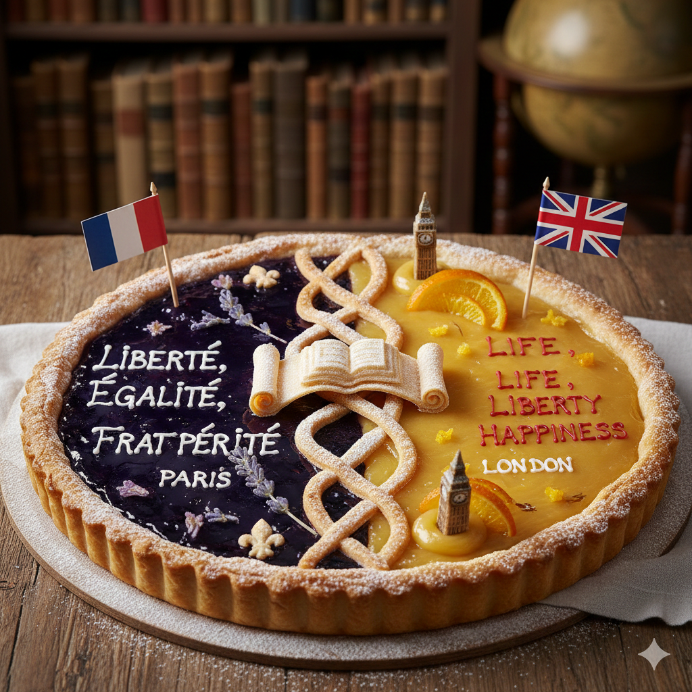

Menú Navideño
2025
Menu completado con éxito.
I. Entrantes

Ensalada de Protocolo con Etiqueta al Punto
Perfectamente alineada, distancia entre hojas medida con regla. Incluye: saludo oficial, orden de precedencias y cero alimentos reales.
Pincho de Organización de Eventos Empresariales
Planificado, calendarizado, enviado por email, aprobado por tres departamentos… y cancelado a última hora como todo buen evento.
Pincho de Contabilidad
Crujiente mezcla de asientos, balances y ese sabor clásico a “¿Por qué no me cuadra un céntimo?”
II. Platos Principales

Lasaña de Gestión Avanzada de la Información
Láminas de pasta fresca intercaladas con auténtico ragú de carne y bechamel cremosa.
Estofado de Gestión Financiera
Cocción lenta de presupuestos, gastos y previsiones, servido con aroma a 'este Excel pide clemencia
Linguini al Pesto Genovese
Tiras de etiquetas perfectamente ordenadas, con un aliño suave de HTML que se rompe por un cierre mal puesto.
III. Postres
Tarta Lingüística de Francés e Inglés
Dulce mezcla internacional con vocabulario suave, expresiones deliciosas y un toque de pronunciación “aprobadita”.
Flan de Itinerario Personal para la Empleabilidad
Suave, motivador y lleno de futuro… pero servido con la típica pregunta: “¿Y tú qué quieres hacer con tu vida?”
IV. Bebidas

Café de Digitalización Aplicada al Sistema Productivo
Intenso, moderno y servido en una taza con QR que nadie consigue escanear. Ideal para despertarte… si el WiFi colabora.
Limonada de Sostenibilidad Aplicada al Sistema Productivo
Fresca, con huella de carbono cero y sabor eco-friendly. Perfecta para beber despacio y reciclar con responsabilidad.
Malteada de Desarrollo de Aplicaciones Multiplataforma
Batido adaptable a cualquier vaso, copa o recipiente. Cambia de sabor según el sistema operativo donde la bebas.
Té de Gestión de Recursos Humanos
Suave, cálido y perfectamente infundido. Viene con una galleta en forma de “evaluación del desempeño”.